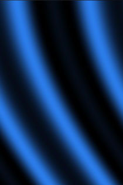

This example application demonstrates how to use OpenGL ES 2.0 to control a device's graphics hardware.

This example is included in the MoSync SDK installation in the /OpenGLES/examples folder. For information on importing the examples into your workspace, see Importing the Examples.
When this application is started you will see a trippy pattern moving on the screen.
The code of the project is collected in one single file. It shows how to use the GLMoblet in order to create an OpenGL ES 2.0 based application. It has a set of helper functions for loading shaders (‘loadShader’) and checking for errors (‘checkGLError’).
The ‘init’ function first calls initGL which loads the vertex and fragment shader, sets up the default state and maps variables to the uniforms of the shader. In the ‘draw’ function, the uniforms that contain the current time in seconds and the multiplicative inverse for the screen resolution, are updated and a triangle fan that covers the entire screen are drawn.
The shader is set to be used so the shader program will run for each pixel on the screen. The shader generates a pattern by calculating colors as a function of time, x and y coordinates.